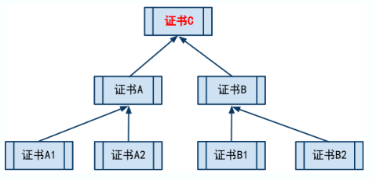
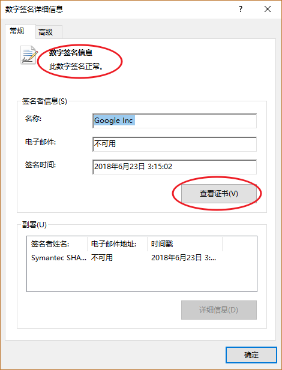
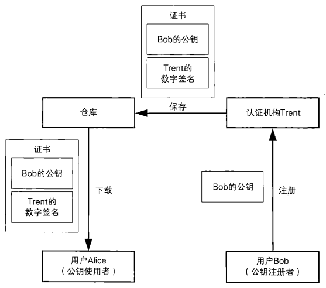

8. 证书
1 | "证书 -- 为公钥加上数字签名" |
要开车得先考驾照．驾照上面记有本人的照片、姓名、出生日期等个人信息．以及有效期、准驾车辆的类型等信息，并由公安局在上面盖章。我们只要看到驾照，就可以知道公安局认定此人具有驾驶车辆的资格。
公钥证书（Public-Key Certificate，PKC)其实和驾照很相似，里面记有姓名、组织、邮箱地址等个人信息，以及属于此人的公钥，并由认证机构（Certification Authority、Certifying Authority, CA）施加数字签名。只要看到公钥证书，我们就可以知道认证机构认定该公钥的确属于此人。公钥证书也简称为证书（certificate）。
可能很多人都没听说过认证机构，认证机构就是能够认定 “公钥确实属于此人”，并能够生成数字签名的个人或者组织。认证机构中有国际性组织和政府所设立的组织，也有通过提供认证服务来盈利的一般企业，此外个人也可以成立认证机构。
8.1 证书的应用场景
下面我们来通过证书的代表性应用场景来理解证书的作用。
下图展示了Alice向Bob发送密文的场景，在生成密文时所使用的Bob的公钥是通过认证机构获取的。
认证机构必须是可信的，对于“可信的第三方”，下图中会使用Trent这个名字，这个词是从trust（信任）一词演变而来的。

下面让我们对照着上图来看一看这些步骤具体都做了些什么。
Bob生成密钥对
要使用公钥密码进行通信，首先需要生成密钥对。Bob生成了一对公钥和私钥，并将私钥自行妥善保管。在这里，密钥对是由Bob自己生成的，也可以由认证机构代为生成。
Bob在认证机构Trent注册自己的公钥
在这里Bob则将公钥发送给了认证机构Trent，这是因为Bob需要请认证机构Trent对他的公钥加上数字签名（也就是生成证书）。
Trent收到Bob的公钥后，会确认所收到的公钥是否为Bob本人所有（参见专栏：身份确认和认证业务准则）
专栏：身份确认和认证业务准则
认证机构确认”本人”身份的方法和认证机构的认证业务准则（CertificatePractice Statement, CPS，的内容有关。如果认证机构提供的是测试用的服务，那么可能完全不会进行任何身份确认。如果是政府部门运營的认证机构，可能就需要根据法律规定来进行身份确认。如果是企业面向内部设立的认证机构，那就可能会给部门负责人打电话直接确认。
例如，VeriSign的认证业务准则中将身份确认分为Class1 ~ 3共三个等级
- Class1：通过向邮箱发送件来确认本人身份
- Class2：通过第三方数据库来确认本人身份
- Class3：通过当面认证和身份证明来确认本人身份
等级越高，身份确认越严格。
认证机构Trent用自己的私钥对Bob的公钥施加数字签名并生成证书
Trent对Bob的公钥加上数字签名。为了生成数字签名，需要Trent自身的私钥，因此Trent需要事先生成好密钥对。
Alice得到带有认证机构Trent的数字签名的Bob的公钥（证书）
现在Alice需要向Bob发送密文，因此她从Trent处获取证书。证书中包含了Bob的公钥。
Alice使用认证机构Trent的公钥验证数字签名，确认Bob的公钥的合法性
Alice使用认证机构Trent的公钥对证书中的数字签名进行验证。如果验证成功，就相当于确认了证书中所包含的公钥的确是属于Bob的。到这里，Alice就得到了合法的Bob的公钥。
Alice用Bob的公钥加密消息并发送给Bob
Alice用Bob的公钥加密要发送的消息，并将消息发送给Bob。
Bob用自己的私钥解密密文得到Alice的消息
Bob收到Alice发送的密文，然后用自己的私钥解密，这样就能够看到Alice的消息了。
上面就是利用认证机构Trent进行公钥密码通信的流程。其中1、2、3这几个步骤仅在注册新公钥时才会进行，并不是每次通信都需要。此外，步骤 4 仅在Alice第一次用公钥密码向Bob发送消息时才需要进行，只要Alice将Bob的公钥保存在电脑中，在以后的通信中就可以直接使用了。
8.2 证书标准规范X.509
证书是由认证机构颁发的，使用者需要对证书进行验证，因此如果证书的格式千奇百怪那就不方便了。于是，人们制定了证书的标准规范，其中使用最广泛的是由ITU（International TelecommumcationUnion，国际电信联盟）和ISO（IntemationalOrganizationforStandardization, 国际标准化组织）制定的X.509规范。很多应用程序都支持x.509并将其作为证书生成和交换的标准规范。
X.509是一种非常通用的证书格式。所有的证书都符合ITU-T X.509国际标准，因此(理论上)为一种应用创建的证书可以用于任何其他符合X.509标准的应用。X.509证书的结构是用ASN1(Abstract Syntax Notation One)进行描述数据结构，并使用ASN.1语法进行编码。
在一份证书中，必须证明公钥及其所有者的姓名是一致的。对X.509证书来说，认证者总是CA或由CA指定的人，一份X.509证书是一些标准字段的集合，这些字段包含有关用户或设备及其相应公钥的信息。X.509标准定义了证书中应该包含哪些信息，并描述了这些信息是如何编码的(即数据格式)
一般来说，一个数字证书内容可能包括基本数据（版本、序列号) 、所签名对象信息（ 签名算法类型、签发者信息、有效期、被签发人、签发的公开密钥）、CA的数字签名，等等。
8.2.1 证书规范
前使用最广泛的标准为ITU和ISO联合制定的X.509的 v3版本规范 (RFC5280）, 其中定义了如下证书信息域：
- 版本号(Version Number）：规范的版本号，目前为版本3，值为0x2；
- 序列号（Serial Number）：由CA维护的为它所发的每个证书分配的一的列号，用来追踪和撤销证书。只要拥有签发者信息和序列号，就可以唯一标识一个证书，最大不能过20个字节；
签名算法（Signature Algorithm）：数字签名所采用的算法，如：
- sha256-with-RSA-Encryption
- ccdsa-with-SHA2S6；
- 颁发者（Issuer）：发证书单位的标识信息，如 ” C=CN，ST=Beijing, L=Beijing, O=org.example.com，CN=ca.org。example.com ”；
- 有效期(Validity): 证书的有效期很，包括起止时间。
- 主体(Subject) : 证书拥有者的标识信息（Distinguished Name），如：” C=CN，ST=Beijing, L=Beijing, CN=person.org.example.com”；
- 主体的公钥信息(SubJect Public Key Info）：所保护的公钥相关的信息：
- 公钥算法 (Public Key Algorithm）公钥采用的算法；
- 主体公钥（Subject Unique Identifier）：公钥的内容。
- 颁发者唯一号（Issuer Unique Identifier）：代表颁发者的唯一信息，仅2、3版本支持，可选；
- 主体唯一号（Subject Unique Identifier）：代表拥有证书实体的唯一信息，仅2，3版本支持，可选：
- 扩展（Extensions，可选）: 可选的一些扩展。中可能包括：
- Subject Key Identifier：实体的秘钥标识符，区分实体的多对秘钥；
- Basic Constraints：一指明是否属于CA;
- Authority Key Identifier：证书颁发者的公钥标识符；
- CRL Distribution Points: 撤销文件的颁发地址；
- Key Usage：证书的用途或功能信息。
此外，证书的颁发者还需要对证书内容利用自己的私钥添加签名， 以防止别人对证书的内容进行篡改。
8.2.2 证书格式
X.509规范中一般推荐使用PEM(Privacy Enhanced Mail）格式来存储证书相关的文件。证书文件的文件名后缀一般为 .crt 或 .cer 。对应私钥文件的文件名后缀一般为 .key。证书请求文件的文件名后綴为 .csr 。有时候也统一用pem作为文件名后缀。
PEM格式采用文本方式进行存储。一般包括首尾标记和内容块，内容块采用Base64进行编码。
编码格式总结:
- X.509 DER(Distinguished Encoding Rules)编码，后缀为：.der .cer .crt
- X.509 BASE64编码(PEM格式)，后缀为：.pem .cer .crt
例如，一个PEM格式（base64编码）的示例证书文件内容如下所示：
1 | -----BEGIN CERTIFICATE----- |
证书中的解析出来的内容：
1 | Certificate: |
8.2.3 CA证书
理论上，人人都可以找个证书工具，自己做一个证书。那如何防止坏人自己制作证书出来骗人捏？
CA是Certificate Authority的缩写，也叫“证书授权中心”。它是负责管理和签发证书的第三方机构, 好比一个可信任的中介公司。一般来说，CA必须是所有行业和所有公众都信任的、认可的。因此它必须具有足够的权威性。比如现实生活中我们要去公安局去办理身份证一样。
CA证书
CA 证书，顾名思义，就是CA颁发的证书。
前面已经说了，人人都可以找工具制作证书。但是因为你不是权威的CA机关，你自己搞的证书不具有权威性。
证书信任链
证书直接是可以有信任关系的, 通过一个证书可以证明另一个证书也是真实可信的. 实际上，证书之间的信任关系，是可以嵌套的。比如，C 信任 A1，A1 信任 A2，A2 信任 A3……这个叫做证书的信任链。只要你信任链上的头一个证书，那后续的证书，都是可以信任滴。
假设 C 证书信任 A 和 B；然后 A 信任 A1 和 A2；B 信任 B1 和 B2。则它们之间，构成如下的一个树形关系（一个倒立的树）。

处于最顶上的树根位置的那个证书，就是“根证书”。除了根证书，其它证书都要依靠上一级的证书，来证明自己。那谁来证明“根证书”可靠捏？实际上，根证书自己证明自己是可靠滴（或者换句话说，根证书是不需要被证明滴）。
聪明的同学此刻应该意识到了：根证书是整个证书体系安全的根本。所以，如果某个证书体系中，根证书出了问题（不再可信了），那么所有被根证书所信任的其它证书，也就不再可信了。
证书有啥用
验证网站是否可信（针对HTTPS）
通常，我们如果访问某些敏感的网页（比如用户登录的页面），其协议都会使用 HTTPS 而不是 HTTP。因为 HTTP 协议是明文的，一旦有坏人在偷窥你的网络通讯，他/她就可以看到网络通讯的内容（比如你的密码、银行帐号、等）；而 HTTPS 是加密的协议，可以保证你的传输过程中，坏蛋无法偷窥。
但是，千万不要以为，HTTPS 协议有了加密，就可高枕无忧了。光有加密是不够滴。假设有某人搞了一个假的网银的站点，然后诱骗你上这个站点。假设真的点击登录了就被骗了。
为了防止坏人这么干，HTTPS 协议除了有加密的机制，还有一套证书的机制。通过证书来确保，某个站点确实就是某个站点。
有了证书之后，当你的浏览器在访问某个 HTTPS 网站时，会验证该站点上的 CA 证书。如果浏览器发现该证书没有问题（证书被某个根证书信任、证书上绑定的域名和该网站的域名一致、证书没有过期），那么页面就直接打开；否则的话，浏览器会给出一个警告，告诉你该网站的证书存在某某问题，是否继续访问该站点？下面给出 IE 和 Firefox 的抓图：


大多数知名的网站，如果用了 HTTPS 协议，其证书都是可信的（也就不会出现上述警告）。所以，今后你如果上某个知名网站，发现浏览器跳出上述警告，你就要小心啦！
验证某文件是否可信（是否被篡改）
证书除了可以用来验证某个网站，还可以用来验证某个文件是否被篡改。具体是通过证书来制作文件的数字签名。制作数字签名的过程太专业，咱就不说了。后面专门告诉大家如何验证文件的数字签名。考虑到大多数人用 Windows 系统，俺就拿 Windows 的例子来说事儿。
比如，俺手头有一个 Google Chrome的安装文件（带有数字签名）。当俺查看该文件的属性，会看到如下的界面。眼神好的同学，会注意到到上面有个“数字签名”的标签页。如果没有出现这个标签页，就说明该文件没有附带数字签名。

一般来说，签名列表中，有且仅有一个签名。选中它，点“详细信息”按钮。跳出如下界面：
通常这个界面会显示一行字：“该数字签名正常”（图中红圈标出）。如果有这行字，就说明该文件从出厂到你手里，中途没有被篡改过（是原装滴、是纯洁滴）。如果该文件被篡改过了（比如，感染了病毒、被注入木马），那么对话框会出现一个警告提示“该数字签名无效”

不论签名是否正常，你都可以点“查看证书”按钮。这时候，会跳出证书的对话框。如下：


从后一个界面，可以看到刚才说的证书信任链。图中的信任链有3层：
- 第1层是根证书（verisign）。
- 第2层是 symantec 专门用来签名的证书。
- 第3层是 Google自己的证书。
目前大多数知名的公司（或组织机构），其发布的可执行文件（比如软件安装包、驱动程序、安全补丁），都带有数字签名。你可以自己去看一下。
建议大伙儿在安装软件之前，都先看看是否有数字签名？如果有，就按照上述步骤验证一把。一旦数字签名是坏的，那可千万别装。
8.3 公钥基础设施（PKI）
仅制定证书的规范还不足以支持公钥的实际运用，我们还需要很多其他的规范，例如证书应该由谁来颁发，如何颁发，私钥泄露时应该如何作废证书，计算机之间的数据交换应采用怎样的格式等。这一节我们将介绍能够使公钥的运用更加有效的公钥基础设施。
8.3.1 什么是公钥基础设施
公钥基础设施（Public-Key infrastructure）是为了能够更有效地运用公钥而制定的一系列规范和规格的总称。公钥基础设施一般根据其英语缩写而简称为PKI。
PKI只是一个总称，而并非指某一个单独的规范或规格。例如，RSA公司所制定的PKCS（Public-Key Cryptography Standards，公钥密码标准）系列规范也是PKI的一种，而互联网规格RFC（Requestfor Comments）中也有很多与PKI相关的文档。此外，X.509这样的规范也是PKI的一种。在开发PKI程序时所使用的由各个公司编写的API（Application Programming Interface, 应用程序编程接口）和规格设计书也可以算是PKI的相关规格。
因此，根据具体所采用的规格，PKI也会有很多变种，这也是很多人难以整体理解PKI的原因之一。
为了帮助大家整体理解PKI,我们来简单总结一下PKI的基本组成要素（用户、认证机构、仓库）以及认证机构所负责的工作。
8.3.2 PKI的组成要素
PKI的组成要素主要有以下三个：
- 用户 — 使用PKI的人
- 认证机构 — 颁发证书的人
- 仓库 — 保存证书的数据库

用户
用户就是像Alice、Bob这样使用PKI的人。用户包括两种：一种是希望使用PKI注册自己的公钥的人，另一种是希望使用已注册的公钥的人。我们来具体看一下这两种用户所要进行的操作。
- 注册公钥的用户所进行的操作
- 生成密钥对（也可以由认证机构生成）
- 在认证机构注册公钥
- 向认证机构申请证书
- 根据需要申请作废已注册的公钥
- 解密接收到的密文
- 对消息进行数字签名
使用已注册公钥的用户所进行的操作
- 将消息加密后发送给接收者
- 验证数字签名
1
2
3
4
5
6
7
8
9
10
11
12
13
14/*
==================== 小知识点 ====================
浏览器如何验证SSL证书
1. 在IE浏览器的菜单中点击“工具 /Internet选项”，选择“内容”标签，点击“证书”按钮，然后就可以看到IE
浏览器已经信任了许多“中级证书颁发机构”和“受信任的根证书颁发机 构。当我们在访问该网站时，浏览器
就会自动下载该网站的SSL证书，并对证书的安全性进行检查。
2. 由于证书是分等级的，网站拥有者可能从根证书颁发机构领到证书，也可能从根证书的下一级（如某个国家
的认证中心，或者是某个省发出的证书）领到证书。假设我们正在访问某个使用 了 SSL技术的网站，IE浏
览器就会收到了一个SSL证书，如果这个证书是由根证书颁发机构签发的，IE浏览器就会按照下面的步骤来
检查：浏览器使用内 置的根证书中的公钥来对收到的证书进行认证，如果一致，就表示该安全证书是由可信
任的颁证机构签发的，这个网站就是安全可靠的；如果该SSL证书不是根服 务器签发的，浏览器就会自动检
查上一级的发证机构，直到找到相应的根证书颁发机构，如果该根证书颁发机构是可信的，这个网站的SSL证
书也是可信的。
*/
认证机构（CA）
认证机构（Certification Authority，CA）是对证书进行管理的人。上面的图中我们给它起了一个名字叫作Trent。认证机构具体所进行的操作如下：
生成密钥对 (也可以由用户生成)
生成密钥对有两种方式：一种是由PKI用户自行生成，一种是由认证机构来生成。在认证机构生成用户密钥对的情况下，认证机构需要将私钥发送给用户，这时就需要使用PKCS#12（Personal Information Exchange Syntax Standard）等规范。
在注册公钥时对本人身份进行认证, 生成并颁发证书
在用户自行生成密钥对的情况下，用户会请求认证机构来生成证书。申请证书时所使用的规范是由PKCS#10（Certification Request Syntax Standard）定义的。
认证机构根据其认证业务准则（Certification Practice Statement，CPS）对用户的身份进行认证，并生成证书。在生成证书时，需要使用认证机构的私钥来进行数字签名。生成的证书格式是由PKCS#6 （Extended-Certificate Syntax Standard）和 X.509定义的。
作废证书
当用户的私钥丢失、被盗时，认证机构需要对证书进行作废（revoke）。此外，即便私钥安然无恙，有时候也需要作废证书，例如用户从公司离职导致其失去私钥的使用权限，或者是名称变更导致和证书中记载的内容不一致等情况。
纸质证书只要撕毁就可以作废了，但这里的证书是数字信息，即便从仓库中删除也无法作废，因为用户会保存证书的副本，但认证机构又不能人侵用户的电脑将副本删除。
要作废证书，认证机构需要制作一张证书==作废清单（Certificate Revocation List),简称为CRL==。
CRL是认证机构宣布作废的证书一览表，具体来说，是一张已作废的证书序列号的清单，并由认证机构加上数字签名。证书序列号是认证机构在颁发证书时所赋予的编号，在证书中都会记载。
PKI用户需要从认证机构获取最新的CRL,并查询自己要用于验证签名（或者是用于加密）的公钥证书是否已经作废这个步骤是非常重要的。
假设我们手上有Bob的证书，该证书有合法的认证机构签名，而且也在有效期内，但仅凭这些还不能说明该证书一定是有效的，还需要查询认证机构最新的CRL，并确认该证书是否有效。一般来说，这个检查不是由用户自身来完成的，而是应该由处理该证书的软件来完成，但有很多软件并没有及时更能CRL。
认证机构的工作中，公钥注册和本人身份认证这一部分可以由注册机构（Registration Authority，RA) 来分担。这样一来，认证机构就可以将精力集中到颁发证书上，从而减轻了认证机构的负担。不过，引入注册机构也有弊端，比如说认证机构需要对注册机构本身进行认证，而且随着组成要素的增加，沟通过程也会变得复杂，容易遭受攻击的点也会增。
仓库
仓库（repository）是一个保存证书的数据库，PKI用户在需要的时候可以从中获取证书．它的作用有点像打电话时用的电话本。在本章开头的例子中，尽管没特别提到，但Alice获取Bob的证书时，就可以使用仓库。仓库也叫作证书目录。
8.3.3 各种各样的PKI
公钥基础设施（PKI）这个名字总会引起一些误解，比如说“面向公众的权威认证机构只有一个”，或者“全世界的公钥最终都是由一个根CA来认证的”，其实这些都是不正确的。认证机构只要对公钥进行数字签名就可以了，因此任何人都可以成为认证机构，实际上世界上已经有无数个认证机构了。
国家、地方政府、医院、图书馆等公共组织和团体可以成立认证机构来实现PKI,公司也可以出于业务需要在内部实现PKI,甚至你和你的朋友也可以以实验为目的来构建PKI。
在公司内部使用的情况下，认证机构的层级可以像上一节中一样和公司的组织层级一一对应，也可以不一一对应。例如，如果公司在东京、大阪、北海道和九州都成立了分公司，也可以采取各个分公司之间相互认证的结构。在认证机构的运营方面，可以购买用于构建PKI的软件产品由自己公司运营，也可以使用VeriSign等外部认证服务。具体要采取怎样的方式，取决于目的和规模，并没有一定之规。